Overview
Concretely, two composite fields are introduced into the lane detection problem: part intensity field for predicting the confidence and precise location of lane keypoints, and part association field for predicting association between two keypoints, inspired by OpenPifPaf.
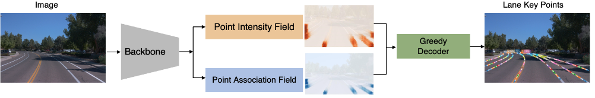
To ensure compatibility with our designed lane skeleton for differently formatted lane datasets, the ground truth annotations from differently formatted datasets were downsampled to a uniformly ditributed pattern.
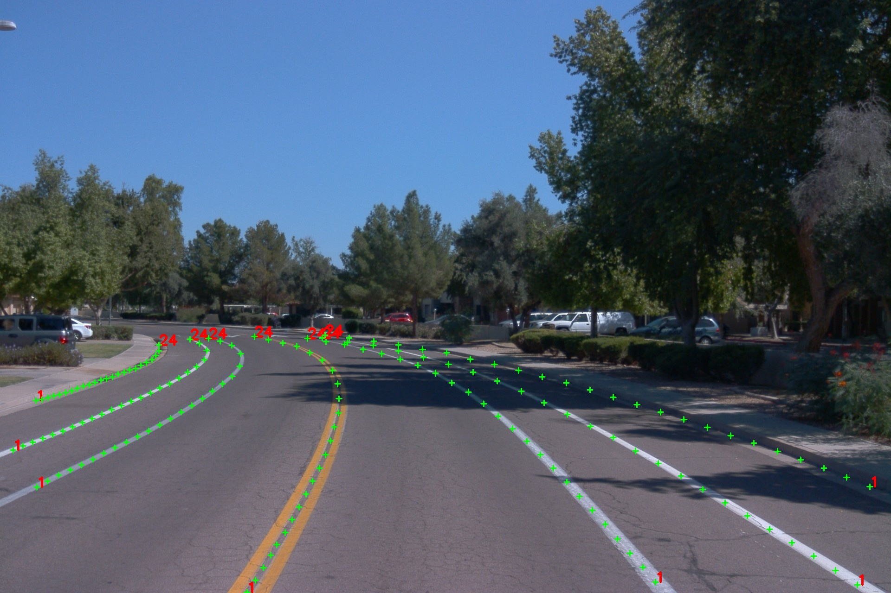
Results
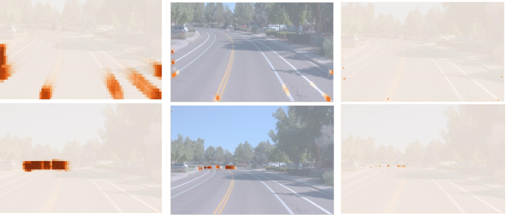
Intensity fields components for starting points (top row) and ending points (bottom row) of the lane.
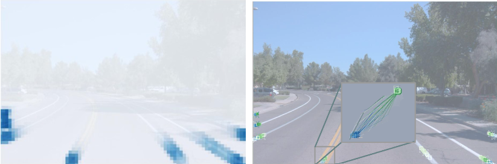 ssociation fields components connecting the starting points and the second points of the lanes.
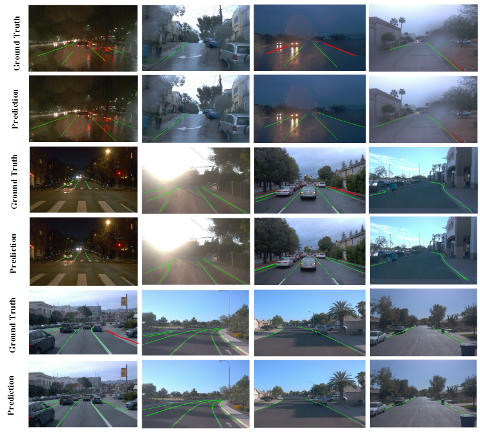 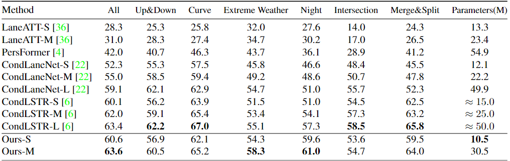 Results visualization and Evaluation on OpenLane benchmark
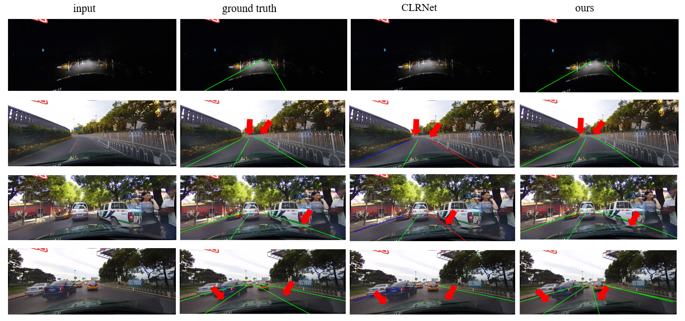 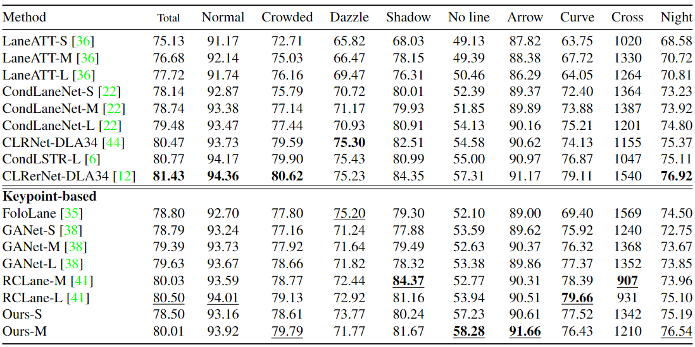 Results visualization and Evaluation on CULane benchmark
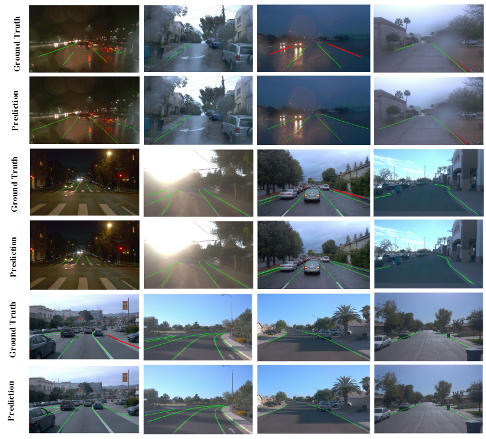
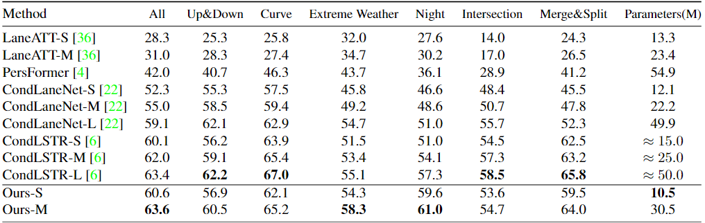
Results visualization and Evaluation on OpenLane benchmark
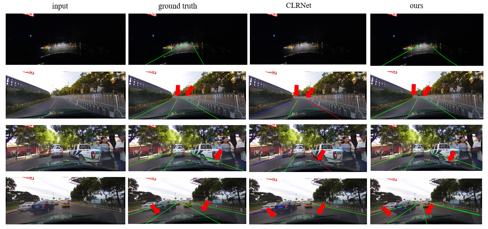 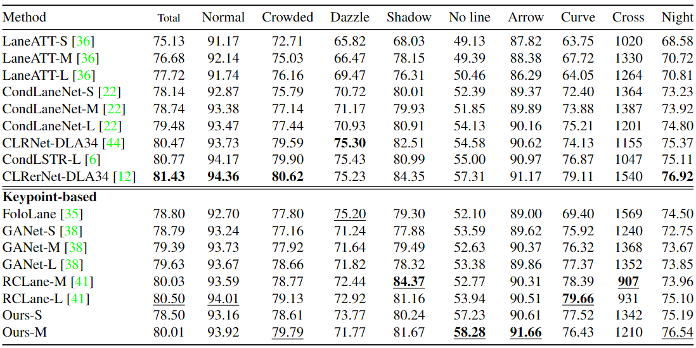 Results visualization and Evaluation on CULane benchmark
Demos